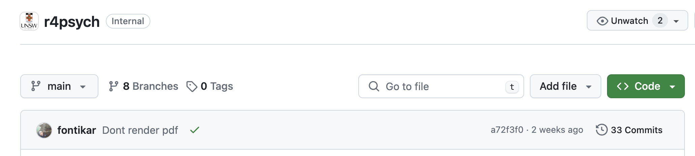
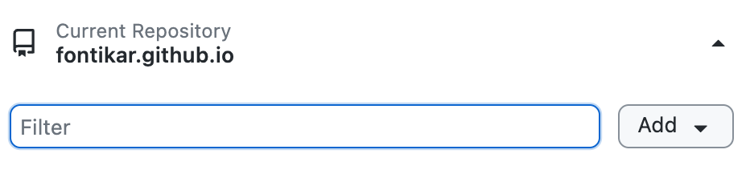

8 Contributing
This resource is created in mind so that the community that uses it, can also contribute to it. We hope this mindset will encourage the resource to grow and stay up-to-date for R learners.
Importantly, all skill levels are welcome to contribute, even if you think your skills are not up to scratch - this is what this guide is for!
8.0.1 Hello Quarto!
This book is built by Quarto which is an open source, cross-language publishing system that allows users to build beautiful things from blogs, to websites and books!
You can learn more about the capabilities of Quarto in this talk by Mine Çetinkaya-Rundel & Julia Stewart Lowndes at posit::conf(2023)
8.0.1.1 Install Quarto
Let’s first make sure we the latest version of Quarto installed.
8.0.2 GitHub Workflow
Let’s talk about the Git/GitHub part of the workflow. Git is a version control system. It that tracks changes in our code that generated this book and helps us coordinate our collaborative edits.
Git monitors the changes in a project directory a.k.a repository or “repo”. There are two types of repositories:
Local repository: This is a project directory that exists locally in your computer than git is actively watching over.
Remote repository: This is a synced copy of your local repo. The remote repo for this book lives on GitHub. GitHub centralises our collaborative efforts. It provides a platform for the community to make a local copy of the book, create changes and introduce them back to the remote repository. GitHub also acts as the hosting service for the book itself which is also a big bonus for us.
8.0.2.1 Sign up to GitHub
Start by getting yourself an account at GitHub by signing up here
8.0.2.2 Install git
Follow these instructions from “Happy Git with R” to install git to your computer. There are specific instructions for different operating systems.
8.0.2.3 Install a git client
Traditionally, git has been used in the shell terminal. This is the ‘back-end’ of the computer and you can interact with your computer using code. This means that you have to type out commands to tell git what to do. This method can become a little overwhelming when you are starting out because you have to learn all the different commands.
If you are starting out with git and GitHub, we suggest using a git client like Github Desktop, however it is limited to only to Windows and Mac. If you use Linux, GitKraken is also a great alternative.
There are many git clients to choose from. Once you start to get the hang on things, all of these clients are much of the same and its a matter of personal preference.
If you are an RStudio user, there is a git tab that is built-in to the interface, its features are more simplified than the previously mentioned clients but does the basic commands that we will talk about next.
For the rest of the chapter, we will focus on using Github Desktop, but the main git commands should translate to whichever client you are using.
8.0.2.4 Cloning: make a local copy
Now that we have all the installation out of the way, we can get started!
Lets first get you a local copy of the book onto your computer by “cloning” the repository
Head over to the remote repo for the book:
- Click on the big green button that says Code

Here you will find a drop-down menu showing different methods of cloning the code from the remote repo.
We will stick with the default option of using HTTPS a.k.a. cloning by using the URL of the remote repo.
Click on the copy URL button (The stacked squares icon)
Navigate to Github Desktop and click on the first drop down menu from the left. Here you will find the Add button.

Click on Add and then Clone Repository
Click on the URL option and paste in the URL of this book’s remote repo e.g. https://github.com/unsw-edu-au/r4psych
Under Local Path, you can choose where you want to place this cloned repo. Avoid putting your repos in Cloud services such as Dropbox or Google Drive. These can sometimes interfere with git’s ability to track your changes.
Finally, click Clone and let git do the work! It will copy everything that is in the remote repo and bring it down locally on your computer!
Navigate to the local path where you told git to clone to in Step 7 and check out the directories. You will learn more about these in Book Structure
8.0.2.5 Branches
We will work in branches so as to not overwrite each other’s work and have a systematic way in introducing new contributions to the book. Coordinating collaboratives changes on branches is what GitHub does best.
The main branch will be the current approved version of the book. The main branch is what displays at https://unsw-edu-au.github.io/r4psych/
A nice clean workflow with branches is to consider them temporary. You pull the most recent from main, you create a branch locally, you make your edits, you commit regularly, you push regularly to github.com, and then you create a pull request for it to be merged into main, and when it’s approved the branch is deleted on github.com and you also delete it locally. That’s the workflow we’ll walk through here. A great resource on GitHub setup and collaboration is Happy Git with R, which includes fantastic background philosophy as well as bash commands for setup, workflows, and collaboration.
The following assumes you’ve completed the initial setup from the previous chapter.